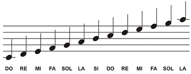
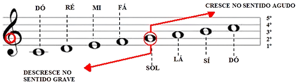
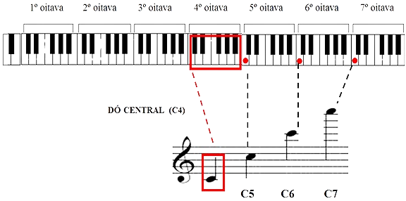
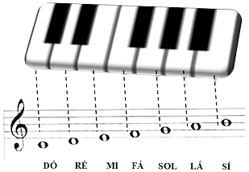
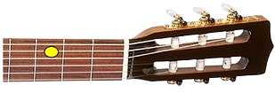

As partituras registram ideias harmônicas, rítmicas e melódicas. Por isso, ao ler esse capítulo, você possivelmente recordará do momento em que aprendia o alfabeto. Assim como você decorou o som de cada letra, também precisará decorar a maneira como cada nota é representada no papel. Ao final, você estará dominando uma nova linguagem!
Pauta é a região onde escrevemos as notas musicais. Essa região é formada por linhas e espaços. Cada linha e cada espaço são usados para representar uma nota musical diferente. Na figura abaixo, você pode ver as linhas, os espaços e as respectivas notas:
Repare como existem 5 linhas na pauta. É possível também criarmos mais linhas para alcançarmos outras oitavas (a primeira nota Dó desse exemplo, bem como a última nota Lá, estão em linhas extras, também chamadas de “suplementares”). Falaremos dessas linhas extras logo em seguida, por enquanto apenas observe que cada linha e espaço são utilizados para representar uma nota diferente em sequência.
Os músicos, ao longo da história, escolheram posições diferentes para as notas nas linhas das pautas. E por isso foram inventadas as claves, símbolos que serviriam para sinalizar a nota e a linha de referência que se adotava. A clave mais usada para violão, piano e voz é a clave de Sol.
Ela recebeu esse nome porque informa que a nota que estiver sobre a segunda linha se chamará Sol. Note como o próprio desenho da clave começa na 2º linha (indicação em vermelho na figura abaixo). Muito bem, agora que você já sabe onde está o Sol, poderá registrar todas as outras notas seguindo a mesma lógica que vimos acima:
Obs: Você já deve ter percebido que a primeira coisa que você tem que saber para ler uma partitura é a sequência de notas, de cor e salteado, de trás para frente e de frente para trás!
Agora vamos esclarecer qual é a relação desses pontinhos no papel com o instrumento. Na figura abaixo, estão representadas as oitavas de um piano comum. Perceba como cada Dó tem uma posição diferente na pauta, dependendo da oitava em que se encontra. Utilizaremos um número ao lado da letra C para dizer em qual oitava ele está:
Obs: Esse Dó central (C4) é o Dó que se localiza bem no meio do teclado ou piano. Para você se localizar ainda mais, vamos ampliar a oitava destacada em vermelho (Dó central) e mostrar a correspondência das notas do instrumento com o registro na pauta:
No violão, o Dó central situa-se na terceira casa, quinta corda:
Obs: A partitura para o violão está deslocada de uma oitava em relação ao piano. Na realidade, o Dó central do piano corresponde à altura da nota Dó na segunda corda do violão. Essa definição deslocada foi escolhida para facilitar a escrita, pois se não fosse assim, a escrita no violão precisaria de muitas linhas suplementares para representar os acordes mais simples e comuns.